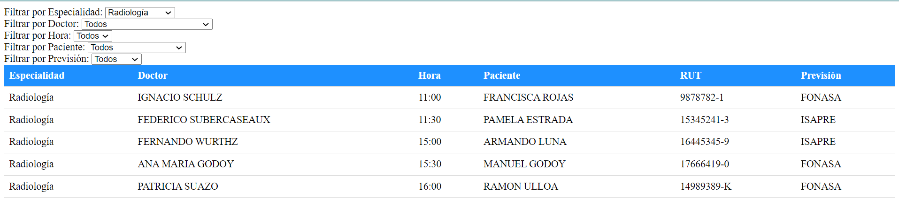
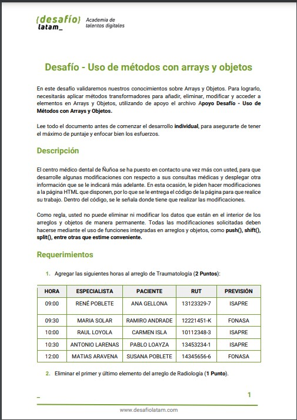
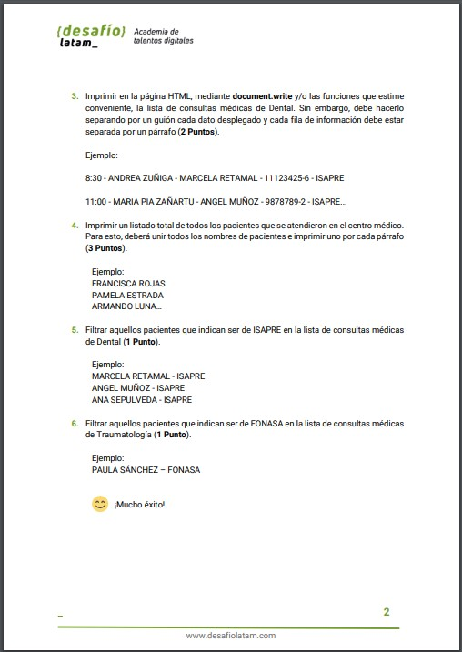

Curso Development Full Stack JavaScript-g64
Descripcion de lo realizado
Fusion Web en html
Tabla Dinamica en Js
Jquery

desafio evaluado 11 uso de metodos con arrays y objetos
Desafio pagina 1 y 2 / toca para ocultar carusel
alert
toolpit


Previous
Next
CAMBIO
DE COLOR
Sección de Requerimientos
Sección de Tabla dinamica